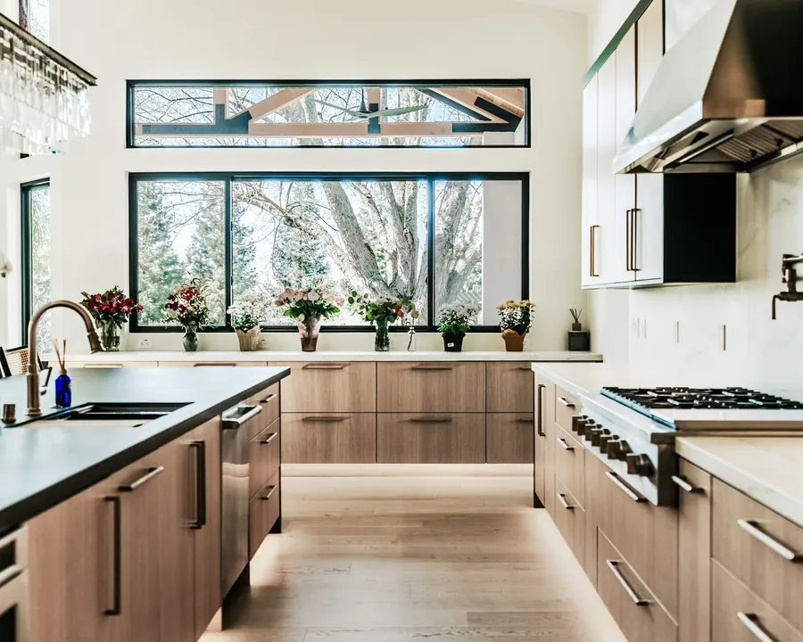

تصميم ثلاثي الأبعاد
تصميم واقعي بالألوان والخامات المختارة، مع إمكانية التعديل قبل اعتماد التصنيع.

تصميم وتفصيل المطابخ في الرياض
نصمم مطبخك بتقنية ثلاثية الأبعاد قبل التصنيع، ونساعدك في اختيار الخامات والأسطح والإضاءة، ثم ننفذه ونركبه في موقعك بدقة عالية.
من نحن
فيوتشر كيت شركة متخصصة في تصميم وتصنيع وتركيب المطابخ في الرياض. قبل البدء بالتصميم ندرس معك احتياجاتك اليومية: عدد أفراد الأسرة، وحجم الأجهزة، ومساحات التخزين المطلوبة، وطريقة الطبخ المعتادة في بيتك.
بناء على ذلك نجهز المخطط والتصميم، ونلتزم بتنفيذ المطبخ مطابقا لما اعتمدته.
تعرف على آلية العمل
التصاميم
نقدم خمسة أساليب رئيسية، ويمكن تعديل أي منها في الخامات والألوان والمقابض والإضاءة.

خطوط مستقيمة وأسطح واسعة بلا فواصل، مع جزيرة في وسط المطبخ. مناسب للمطابخ المفتوحة على الصالة.

تفاصيل كلاسيكية بلمسة حديثة: أبواب بإطار بسيط، وألوان عميقة مثل الأخضر والمريمي، ومقابض ذهبية مطفية.

واجهات بدون مقابض ظاهرة، تفتح بمجرى «جولا» أو بنظام الضغط، مع أجهزة مدمجة داخل وحدات طولية.

قشرة خشب طبيعي مع أسطح فاتحة وإضاءة سفلية هادئة، لمن يفضل الطابع الدافئ في المطبخ.

ألوان داكنة مثل الفحمي والأخضر العميق، مع حجر طبيعي وإضاءة مركزة تبرز الخامات.
الخدمات
تصميم واقعي بالألوان والخامات المختارة، مع إمكانية التعديل قبل اعتماد التصنيع.
خزائن علوية وسفلية ووحدات طولية مصنوعة على مقاس جدرانك، بخامات مقاومة للرطوبة والحرارة.
كوارتز، بورسلان، رخام طبيعي وجرانيت، بتفصيل الحواف وفتحات المغسلة والموقد في الموقع.
تقسيمات مدروسة للتعليق والأدراج والأحذية، مع إضاءة داخلية ومرايا وأبواب زجاجية.
تخطيط دقيق لأماكن الأفران والثلاجة وغسالة الصحون، وتوريد الأجهزة وتركيبها عند الطلب.
شرائط LED أسفل الخزائن، وداخل الأدراج والخزائن الزجاجية، بحساسات حركة ودرجات حرارة لون مختارة.
تغيير الواجهات أو الأسطح أو المخطط بالكامل، مع الاستفادة مما يصلح من مطبخك الحالي.
نزورك في موقعك بالرياض لأخذ المقاسات وتحديد أماكن الكهرباء والسباكة قبل بدء التصميم.
المخططات
يحدد شكل المطبخ المسافة بين الثلاجة والمغسلة والموقد. اختر المخطط لمعرفة الحالات التي نرشحه فيها.
آلية العمل
نتعرف على احتياجاتك: عدد أفراد الأسرة، وطريقة الطبخ، والأجهزة الحالية، والأسلوب المفضل.
نزور موقعك لأخذ المقاسات الدقيقة وتحديد مخارج الكهرباء والماء والتهوية.
نقدم المخطط والمناظير بالخامات والألوان، ونجري التعديلات حتى تعتمد التصميم.
نعرض عليك عينات الواجهات والأسطح، ونقدم عرض سعر مفصلا بالبنود ومدة التنفيذ.
نبدأ التصنيع وفق الرسومات التنفيذية المعتمدة، ونطلعك على مراحل العمل.
يركب فريقنا المطبخ في موقعك، ونراجع معك جميع الأبواب والأدراج قبل التسليم.
المعرض
الصور في هذا القسم للإلهام وتوضيح الأساليب والخامات.
نعتمد التصميم معك قبل التصنيع،
ونلتزم بتنفيذه كما اعتمدته.
قبل البدء
لأي استفسار آخر، تواصل معنا.
يعتمد السعر على الطول الإجمالي للوحدات، ونوع خامة الواجهات والهيكل، ونوع السطح، والإكسسوارات مثل الأدراج الداخلية والإضاءة. بعد رفع المقاسات واعتماد التصميم تستلم عرضا مفصلا بكل بند.
نعم. نقدم تصميما ثلاثي الأبعاد بالألوان والخامات المختارة، ولا يبدأ التصنيع إلا بعد اعتمادك النهائي للتصميم والرسومات.
تختلف المدة بحسب حجم المطبخ ونوع الخامات وتوفرها. نحدد المدة كتابيا في عرض السعر قبل البدء.
الأكريليك لامع وسهل التنظيف، واللاكر يعطي لونا مطفيا عميقا بأي درجة تختارها، وقشرة الخشب الطبيعي تمنح دفئا وملمسا حقيقيا. نعرض عليك العينات ونشرح ما يناسب استخدامك.
الكوارتز عملي ومقاوم للبقع، والبورسلان يتحمل الحرارة العالية ويأتي بألواح كبيرة رفيعة، والرخام الطبيعي فريد في عروقه لكنه يحتاج عناية أكبر. نساعدك على الاختيار بحسب طريقة طبخك.
نعم، يمكن تغيير الواجهات أو الأسطح فقط، أو إعادة تصميم المطبخ بالكامل. نقيم الوضع الحالي في زيارة الموقع ونقترح الأنسب.
نعم، نصمم وننفذ غرف الملابس (الدريسنج) والخزائن الجدارية ووحدات الحمامات بنفس أسلوب العمل وجودة التشطيب.
تواصل معنا
أرسل لنا بياناتك وفكرتك المبدئية، وسنتواصل معك لتحديد موعد الزيارة.